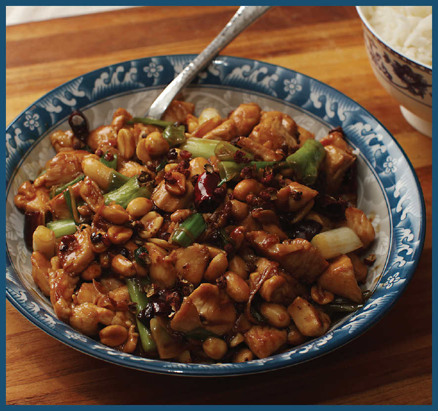

GONG BAO JI DING (SICHUAN CHICKEN WITH PEANUTS)

This one is the real deal. The Sichuan original that has been served in the mountainous regions of southwestern China since at least the nineteenth century. Unlike the Chinese American version, which is composed of nearly equal parts chicken and vegetables, the Sichuan original is mainly chicken with peanuts and scallions added in for textural variety. With a cooking time of mere minutes and prep that can be done while your rice is cooking, it’s a near-perfect weeknight dish when paired with some simple stir-fried greens (see here).
The food in Sichuan can be explosively flavored with tons of hot chiles and fermented beans (see, for example, Mapo Tofu on here), but gong bao ji ding is decidedly more subtle. Its main aroma is citrusy and mouth-numbing Sichuan peppercorns, and rather than fatty nuggets of chicken thigh, it’s made with cubes of tender, moist chicken breast coated in a sweet, hot, and numbing glaze.
When I started working to re-create this dish back at home, I didn’t have to go much further than Fuchsia Dunlop’s version in her book Every Grain of Rice. My recipe is adapted from hers, along with some notes I took in Chengdu. It starts with a handful of dried hot red chiles bloomed in oil along with some Sichuan peppercorns. This step allows the flavor of the chiles and the peppercorns to add a gentle fragrance to every bite without giving you the overwhelming metallic hit that powdered peppercorns can.
The easiest way to prepare the chiles is to snip them into short segments (about ⅓ inch/1 cm) with some kitchen shears, then shake out the excess seeds, which can make the dish too spicy. Sichuan peppercorns are not spicy at all, but rather have a curious mouth-numbing sensation that complements the heat of chiles very well (a combination of flavors unique to Sichuan cuisine known as málà, or “numbing hot,” which I discuss in more detail on here). You can find Sichuan peppercorns in both green and red varieties at most Asian markets these days, or you can easily order them online. Green peppercorns tend to be a little stronger in flavor than red, though either variety will do in most recipes. The flavor in Sichuan peppercorns is all in the husks, so any small twigs or dark, shiny seeds you find should be picked out and discarded.
Once the oil has been infused, you stir-fry cubes of chicken breast that have been marinated with soy sauce, Shaoxing wine, cornstarch, and salt.
Recipes for gong bao ji ding vary in how garlic and ginger are incorporated. I first tried adding them in minced form but found it overpowered the mild chicken breast. Instead, I add the garlic in thin slices and the ginger in fine matchsticks (julienne).
In my recipe, my sauce is a simple mixture of soy sauce, Shaoxing wine, Chinkiang vinegar, and honey (I find even the smallest amount of sesame oil, a common ingredient in this dish, to be distracting, but you can add a few drops if you’d like), bound together with just a touch of cornstarch. Not all recipes include vinegar, but I enjoy the lightness it brings to the dish.
The whole dish cooks in about half the time it took you to read these notes. It’s hard to think of an easier weeknight meal.